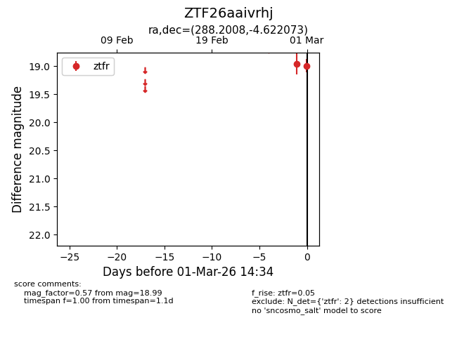
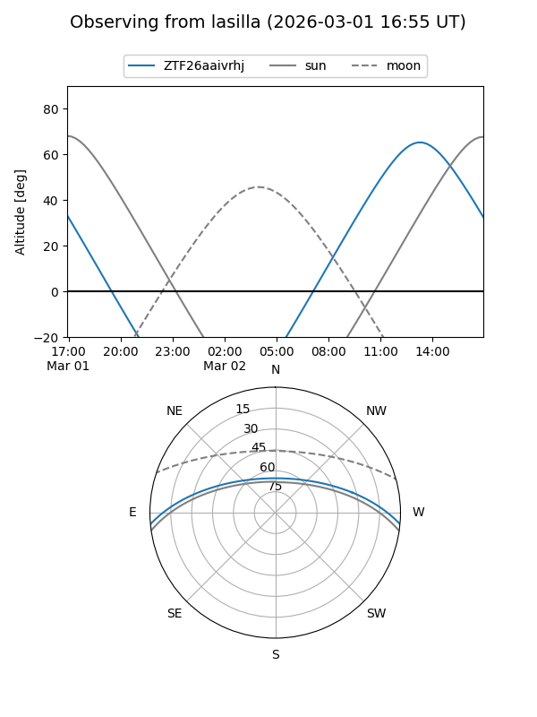
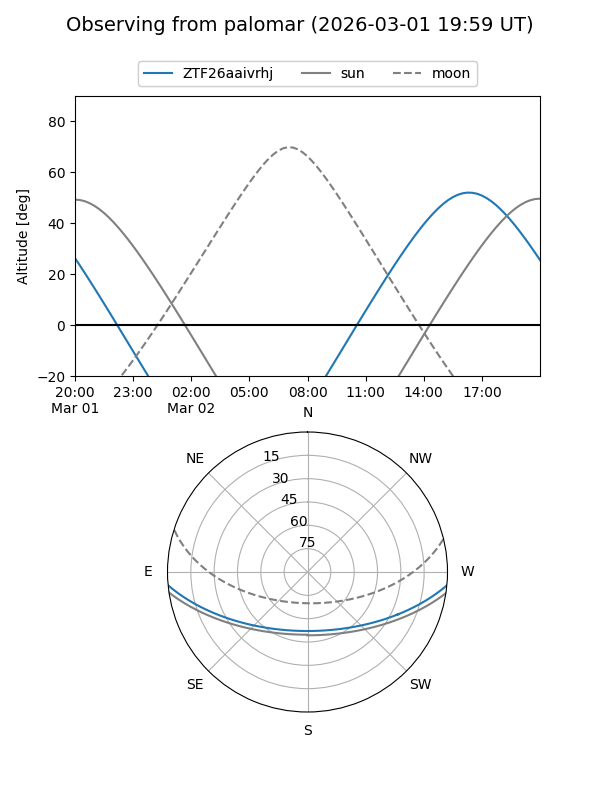

ZTF26aaivrhj
Target ZTF26aaivrhj at 2026-03-01 14:35
Aliases and brokers:
FINK: link
Lasair: link
ALeRCE: link
alt names
ZTF26aaivrhj (ztf,fink_ztf)
Coordinates:
equatorial (ra, dec) = 288.2008,-4.62207
equatorial (HMS+DMS) = 19:12:48.19,-04:37:19.46
galactic (l, b) = (31.2345,-6.85300)
Flags:
Photometry:
last ztfr=18.99
2 ztfr detections
Lightcurve

Visibility


Additional plots